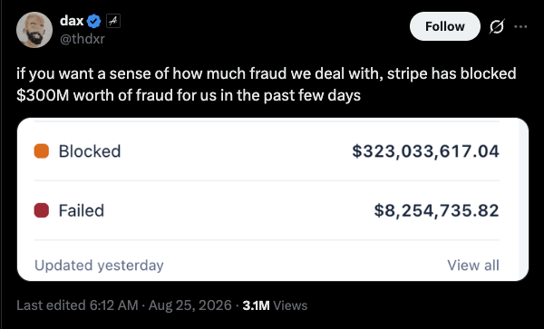

pay-per-token inference for agents
pi402PI402
Pay for AI inference with bitcoin, from inside your coding agent. The payment is final in seconds, so there are no accounts, no buyer-side API keys, and no cards.
pi402 is an extension for the Pi coding agent that lets it pay for its own inference. When a model call comes back with a 402, the agent's own wallet pays it over Lightning and the request goes through.
the meter
No model runs in this page. Token counts are an estimate (about 4 characters each); a real seller bills the usage the upstream reports. Demo bundle is 1,000 tokens (a real bundle is 1,000,000). Press Ctrl+Enter to run.
01the problem
Inference is irreversible. A card payment is not.
Generating inference tokens draws joules from the grid and turns them into heat and part of a response. No message from a card network can reach back and recover that energy. So if you sell inference on cards, you are a lender, not a merchant.
You allocate scarce GPU time now, for an amount you do not know in advance, and learn somewhere between 60 and 120 days later whether you were paid. Each familiar barrier is an attempt to underwrite that loan, and the fraud you fail to catch is the default rate.
- Sign-up wallAn account before the first token.
- Fraud checksInvasive verification for a few cents of usage.
- Minimum top-upYou wanted to try a model, not prepay a month.
- Unsupported countriesThe rail decides who may buy.
- Keys tied to a humanSomeone who can be charged later.

Pick a payment rail that matches the product.
Inference is final, impersonal and priced per token, so the rail it is sold on should be too. Cards are none of those things. A Lightning payment is final in seconds, carries no identity and can be as small as a single token.
Final, so nothing can be charged back
A payment settles within seconds, and settles finally. A preimage either exists or it does not.
Not a claim on a person, so nothing to steal
Card fraud works because a payment is a claim on a person, which can be borrowed or stolen. A Lightning payment is not a claim on anyone.
Small enough to price a single token
The unit is the millisatoshi, 1/1000 of a sat (about $0.00000079 at the time of writing).
Card
Lightning
02how it works
The payment is the credential.
The server answers an unpaid request with HTTP 402: a macaroon that commits to an invoice's payment hash, plus the invoice. Paying reveals the preimage, and macaroon plus preimage is the credential. A valid credential cannot exist without settlement. No sign-up, no key issuance, no account.
One 402 accepts two payment schemes: L402 and Stripe's MPP.
Aperture answers every unpaid request with both offers in a single challenge. A buyer that speaks L402 pays with a macaroon and preimage. A buyer that speaks the Payment HTTP Authentication Scheme (MPP), the IETF draft from Stripe and Tempo, pays the same invoice its own way. A seller reaches both kinds of buyer without choosing.
| L402 | Payment HTTP Authentication Scheme (MPP) | |
|---|---|---|
| Spec | L402 on HTTP 402, docs. A macaroon bound to the invoice's payment hash. | draft-httpauth-payment-00, an IETF draft co-authored by Stripe and Tempo. Nearly the same shape. |
| Credential | Macaroon plus the preimage of the invoice you paid. | A payload carrying the preimage, in an Authorization: Payment header. |
| Meter key | The random token ID inside the macaroon. | The payment hash, derived from the preimage itself. Each 402 books one bundle per door; only the paid one is drawn down. |
| Intents | Pay once, present the same credential until the bundle refuses. | charge: pay per challenge. session: a deposit, bearer requests against a running balance, a metered refund on close. |
| Aperture | Offered on every 402. | Offered alongside L402 with --authenticator.enablempp; sessions with --authenticator.enablesessions. |
pi402 takes a Payment offer when the seller makes one and falls back to L402. It accepts the charge intent by default; session needs a return-invoice minter that the swap-backed wallet cannot supply yet.
03metering
Charge for the thing that varies.
One request costs the seller a few dozen tokens, the next a few thousand, and the seller only learns which once the response is served. So the payment happens once, up front, for a bundle, and the accounting happens per request, from the usage the upstream actually reported. At 1 msat per input token and 2 msat per output token, that is roughly $0.79 / $1.57 per million tokens at the time of writing.
Four calls between the gateway and the meter.
max_tokens when it names one).Aperture asks Lightmeter these four questions for every request. They are the same four chips that light up in the meter at the top of the page; run a completion there and watch them fire in this order.
The life of a bundle, in four steps.
Every payment buys a bundle of tokens. Requests draw it down until it runs out, then the next 402 names a new one. This is what happens to a bundle from first request to last.
- born
The 402 is minted
A bundle exists from the moment the challenge is minted, before it is paid. An unpaid booking expires after ten minutes.
- reserved
A request is admitted
An estimate is held so ten concurrent requests cannot all be admitted against the same last thousand tokens.
- debited
The response finishes
The tokens actually used are debited, weighted by direction, so output-heavy work pays the output rate.
- exhausted
The bundle runs out
A request that would overdraw gets a fresh 402 naming the next bundle. Exhaustion, not the credential, ends a bundle.
How a model's dollar price becomes a price in sats.
Aperture includes meterd, a minimal price server that reads a JSON file of per-model rates; it is enough for a demo. Lightmeter is the production price server. It reads the upstream provider's catalog, tracks the BTC/USD rate, converts dollars per million tokens into msat per token, adds your margin, and keeps an append-only ledger for reconciliation. Try the conversion below with the regtest demo values.
| input | output | |
|---|---|---|
| upstream $/Mtok | ||
| msat/token, raw | ||
| with margin | ||
| rounded up (quoted rate) |
04wavelength
Pay and get paid without running a node.
Agents can now pay for their own inference, and sellers can get paid for it, without a Lightning node on either side. Wavelength is an Ark wallet that pays a BOLT11 invoice through a swap server. That is what lets a wallet live inside a coding agent, and lets a seller accept payment with no channels to open, no inbound liquidity to find and no process to keep online.
- Open and balance channels
- Source inbound liquidity
- Keep a process online
- Buyer:
/fundprints an invoice; pay it from the phone app and the sats land in seconds - Buyer:
/depositgives an on-chain address for the patient path - Seller: aperture mints challenge invoices from a Wavelength wallet instead of lnd
05agents
Agents pay for their own inference.
Plenty of agents can pay a Lightning invoice for an API. Here the metered thing is the model call itself, priced by the token and settled by the preimage. pi402 is an extension for the Pi coding agent that registers a paid model provider. Pi is unmodified.
- First call gets a 402. The provider owns the request path.
- Budget policy checks the quote against a per-request ceiling and a daily cap, before any wallet action.
- The embedded wallet pays the invoice and the credential goes in the cache.
- The request retries and streams back. The agent loop never learns it bought anything.
No API key ever reaches the buyer. The proxy holds the model credential and injects it server-side, so the buyer holds sats and the seller holds the key.
Illustrative. Each call hits a fresh 402 for the bundle quote shown. The real policy asserts on the quoted total outflow, not the invoice face value, so swap fees count against the ceiling.
06run it yourself
Sell your own tokens for sats, on your own infrastructure.
pi402 is open source and there is no hosted endpoint, so you keep the model key, the pricing and the revenue. Put Aperture and a price server in front of any OpenAI-compatible model, point pi402 at it, and every request pays you in bitcoin as it is served. The config below is trimmed from the regtest demo profile; the READMEs have the full steps.
The model key lives in aperture's environment, never in the buyer's. Challenge invoices come from a Wavelength wallet, so there is no node to run.
# challenge invoices come from a Wavelength wallet, not lnd
listenaddr: "127.0.0.1:8404"
authenticator:
network: "regtest"
wavelengthgateway: "https://your-wavelength-gateway.example" # your gateway; the regtest demo runs one locally
services:
- name: "inference"
hostregexp: ".*"
pathregexp: "^/v1/.*"
address: "inference.baseten.co" # any OpenAI-compatible upstream
protocol: "https"
auth: "on"
headers:
Authorization: "Bearer ${BASETEN_GLM_5_2}"
dynamicprice:
enabled: true
grpcaddress: "127.0.0.1:10025"
insecure: true
metered: truelistenaddr: "127.0.0.1:10025"
dbpath: "lightmeter.regtest.db"
defaultmodel: "moonshotai/Kimi-K3"
bundletokens: 1000000
models:
"moonshotai/Kimi-K3":
inputusdpermtok: 3.00
outputusdpermtok: 15.00
pricing:
marginpercent: 25
btcusd:
staticrate: 100000 # pinned for regtest; 0 polls spotgo build ./cmd/lightmeterd
./lightmeterd --config lightmeter.yamlThe buyer holds sats, not a key. Point it at your seller's aperture, fund the wallet, pick a model, prompt.
pi install npm:@lightninglabs/pi-402
export L402_PROXY_URL=https://your-seller.example/v1 # your seller; include the /v1 prefix/fund 20000 # invoice; pay it from the Wavelength app
/model l402-baseten/kimi-k3
# then prompt as usual. /balance and /receipts show the ledgerexport PI402_MAX_SAT_PER_REQUEST=... # per-request ceiling
export PI402_DAILY_CAP_SAT=... # daily ceilingWallet backend env vars (sidecar gateway or embedded WASM) and install alternatives are in the pi402 README.